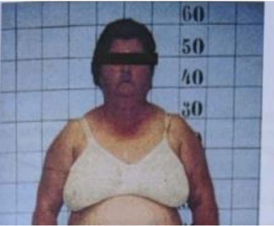
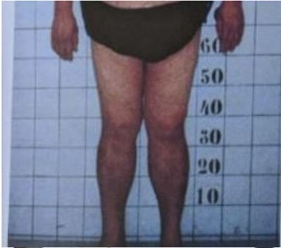
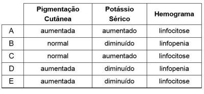

Questão 1 · Diagnóstico da síndrome de Cushing · 4000120147Após a confirmação diagnóstica de síndrome de Cushing, o exame que deve ser realizado para investigação etiológica é
A cortisolúria.
B ACTH plasmático.
C cortisol salivar a meia noite.
D cortisol após 1 mg de dexametasona.
Questão 2 · Síndrome de Cushing ACTH independente · 4000119078Mulher de 28 anos apresenta síndrome de Cushing associada a carcinoma de adrenal secretor de cortisol. Dos abaixo, os achados MENOS prováveis são:
A Osteopenia e fraqueza muscular.
B Hirsutismo e ganho de peso.
C Depressão e hipertensão arterial.
D Intolerância a glicose e acne.
E Hipercalemia e hiperpigmentação cutânea.
Questão 3 · Síndrome de Cushing ACTH dependente · 4000075045Mulher, 38 anos, com investigação de síndrome de Cushing. Exames laboratoriais: cortisol em urina de 24h aumentado mais de 3 vezes e teste da dexametasona 1mg noturna sem supressão; ACTH é alto (>15pg/mL); teste do CRH e da dexametasona 2mg 6/6h por dois dias é negativo. A hipótese diagnóstica mais provável para esta paciente é:
A doença de Cushing
B ACTH ectópico
C hiperplasia de adrenal
D carcinoma de adrenal
Questão 4 · Etiologia · Manif estações clínicas · 4000053956Paciente do sexo feminino, de 52 anos de idade apresenta ganho ponderal, hirsutismo e alteração do humor, com 4 meses de evolução. Relata que há um mês apresenta redução da força motora, com di culdade para levantar-se. Nega doenças ou uso de medicamentos. Ao exame apresenta PA 148/96 mmHg, peso 89kg, estatura 167cm, giba, obesidade central, redução proximal da força motora de membros inferiores. Entre os exames realizou: glicemia em jejum de116mg/dL, HbA1c de 6,2%, cortisolúria de 24 horas: 280µg/24h (referência 20-70µg/24h). Considerando a síndrome mais provável, analise as assertivas. I. A causa mais comum é a hiperplasia suprarrenal macronodular. II. A paciente apresenta risco aumentado de apresentar osteoporose. III. A alteração de força da paciente é provavelmente devida à polineuropatia axonal. IV. A doença causa hipercoagulabilidade e aumento do risco de tromboembolia venosa. Estão corretas apenas as assertivas
A I e II.
B I e III.
C II e III.
D II e IV.
E III e IV.
Questão 5 · Hipercortisolismo · Manif estações clínicas e doenças associadas · Obesidade e síndrome metabólica · 4000024278Uma paciente de 58 anos de idade, hipertensa, com história de mau controle, obesidade grau 1, dislipidêmica, tabagista 40 anos/maços, com histórico de participação sem sucesso em programa de abandono ao tabagismo, é atendida em consulta de acolhimento em Unidade de Saúde da Família, após dois anos da última consulta agendada. Alega que procura atendimento em razão da dor de intensidade grau quatro em hemitórax anterior esquerdo há dois dias, contínua, sem irradiações, realizando ""sinal do apontamento"" para demonstrar local exato da dor, sem fator gatilho ou fator de piora notados. Além disso, relata que vem apresentando tosse não produtiva frequente há um mês, sem febre, dispneia, emagrecimento ou demais comemorativos. Não vem fazendo uso das respectivas medicações, alegando que se esquece de administrá-las. Leva boletim de atendimento em consulta realizada há duas semanas em unidade de pronto atendimento em razão da dor lombar, mostrando receita de corticoide intramuscular fornecida na alta, medicação da qual admite fazer uso com certa frequência, a rmando que esta sempre lhe é prescrita quando consulta na UPA. Mostra também exames realizados, há dois meses, solicitados em consulta médica em clínica popular, com os seguintes resultados: Hb = 13,2 g/dL, Ht = 37,1%, leucócitos = 7,2 mil, plaquetas = 148 mil, Cr = 1,1 mg/dL, Ur = 42 mg/dL, colesterol total = 270 mg/dL, HDL = 38 mg/dL, LDL =192 mg/dL, triglicerídeos = 198 mg/dL e glicemia de jejum = 123 mg/dL. Com relação a esse caso clínico e tendo em vista os conhecimentos médicos correlatos, julgue o item a seguir. O uso frequente de corticoides provavelmente não teve influência sobre a síndrome metabólica na paciente.
A Certo.
B Errado.
Questão 6 · Diagnóstico da síndrome de Cushing · 4000122843Mulher de 32 anos de idade procura atendimento por ganho de peso progressivo no último ano. Manteve dieta habitual ao longo desse ano e é sedentária. Nega uso crônico de qualquer medicamento. Ao exame, o médico percebe alopecia androgenética, pletora facial discreta, deposição centripeta da massa gordurosa e estrias violáceas em abdome. Pelos achados observados ao exame físico, o médico deverá solicitar nesse momento:
A tomografia de adrenais.
B hormônio adrenocorticotrófico (ACTH).
C cortisol basal às 8 hs.
D testosterona em repouso.
E cortisol basal após 1 mg de dexametasona.
Questão 7 · Diagnóstico da síndrome de Cushing · 4000107836Mulher, 42 anos, internada para cirurgia de fratura em coluna refere ganho de peso progressivo, fraqueza muscular proximal, labilidade emocional e hipertensão arterial. Exame físico: ver figura. Exames laboratoriais: glicemia: 118 mg/dl; sódio: 139 mEq/L; potássio: 3,2 mEq/L; creatinina: 1,1 mg/dl; Cálcio total: 10,5 mg/dl. Qual é o exame mais apropriado para o diagnóstico?


A Cortisol basal e ACTH.
B Tomografia de abdome.
C Ressonância de sela túrcica.
D Cortisol pós 1 mg de dexametasona.
Questão 8 · Etiologia · Anorexia Nervosa · 4000083274A elevação em qual dos hormônios abaixo é decorrente dos efeitos da anorexia nervosa?
A Cortisol;
B Hormônio liberador de gonadotrofina (GnRH);
C Leptina;
D Tiroxina (T4);
E TSH;
Questão 9 · Manif estações clínicas · Diagnóstico da síndrome de Cushing · Hipercortisolismo · 4000079385Mulher de 32 anos de idade procura atendimento por ganho de peso progressivo no último ano. Manteve dieta habitual ao longo desse ano e é sedentária. Nega uso crônico de qualquer medicamento. Ao exame, o médico percebe alopecia androgenética, pletora facial discreta, deposição centrípeta da massa gordurosa e estrias violáceas em abdome. Pelos achados observados ao exame físico, o médico deverá solicitar nesse momento:
A tomografia de adrenais.
B hormônio adrenocorticotrófico (ACTH).
C cortisol basal às 8 hs.
D cortisol basal após 1 mg de dexametasona.
Questão 10 · Manif estações clínicas · Pseudo Cushing · 4000076441Sobre a síndrome de Cushing, assinale a alternativa ERRADA:
A A atrofia muscular provoca fraqueza, com dificuldade em se levantar de uma posição sentada ou subir escadas.
B Os pacientes podem ter sede e poliúria (com ou sem glicosúria), cálculos renais, glaucoma, estrias roxas (especialmente ao redor das coxas, mamas e abdome) e facilidade de contusões.
C Os pacientes são suscetíveis a infecções oportunistas.
D Os pacientes alcoolistas podem apresentar hipercortisolismo e muitas manifestações clínicas da síndrome de Cushing.
E Os pacientes devem receber tratamento para comorbidades dependentes de cortisol, incluindo osteomalácia, distúrbios psiquiátricos, diabetes mellitus, hipertensão, hipercalemia e infecções.
Questão 11 · Síndrome de Cushing ACTH independente · Síndrome de Cushing ACTH dependente · 4000067702A Síndrome de Cushing re ete uma série de manifestações clínicas, as quais resultam da exposição crônica a um excesso de glicocorticoides. O distúrbio pode ser dependente ou independente de ACTH. Assinale a opção que NÃO apresenta uma causa de Síndrome de Cushing independente de ACTH.
A Doença de Cushing.
B Síndrome de McCune - Albright.
C Adenoma adrenocortical.
D Hiperplasia suprarrenal macronodular.
E Carcinoma adrenocortical.
Questão 12 · Manif estações clínicas · Síndrome de Cushing ACTH dependente · Diagnóstico da síndrome de Cushing · 4000052046Um senhor de 45 anos, tabagista, é encaminhado ao endocrinologista referindo hipertensão arterial, astenia, hiperglicemia, estrias violáceas e emagrecimento. Cortisol livre urinário, cortisol salivar às 23 horas e ACTH elevados. Em relação a esse caso:
A Uma elevação dos níveis de cortisol e ACTH após o teste de estímulo com CRH (Corticotrophin Releasing Hormone) e com desmopressina, uma supressão de 50% nos níveis séricos de cortisol com 8 mg de dexametasona e a presença de gradiente em relação à periferia na dosagem de ACTH durante o cateterismo do seio petroso inferior são consistentes com o diagnóstico de doença de Cushing
B A ausência de resposta ao teste de estímulo do ACTH com CRH e uma ressonância magnética de hipófise normal confirmam o diagnóstico da síndrome do ACTH ectópico
C A dosagem do ACTH por meio do cateterismo do seio petroso inferior mostrando ausência de gradiente em relação à periferia é sugestiva de Pseudo Cushing
D Uma ressonância magnética de hipófise normal e a ausência de resposta ao teste de estímulo do ACTH com desmopressina e com CRH afastam o diagnóstico de doença de Cushing
E A ausência de resposta ao teste de estímulo do A CTH com CRH e com desmopressina e uma tomografia computadorizada de tórax são suficientes para a confirmação do diagnóstico da síndrome do ACTH ectópico
Questão 13 · Manif estações clínicas · Diagnóstico da síndrome de Cushing · 4000018177Mulher de 28 anos compareceu em consulta ambulatorial referindo ganho de peso há 8 meses, associado ao surgimento de acne, hirsutismo, irregularidade menstrual, e fraqueza muscular. Há 2 meses, refere sintomas depressivos e nega uso de outros medicamentos. Ao exame, PA: 150 x 100 mmHg, Pulso: 92 bpm. Índice de massa corporal: 32 kg/m² Cintura: 98 cm. Face arredondada e pletórica. Pele na, com acne em face e dorso, estrias largas e arroxeadas abdominais e equimoses em membros. Fraqueza muscular proximal. Qual exame está indicado no início da investigação para confirmar o diagnóstico clínico?
A Cortisol plasmático basal.
B Cortisol salivar domiciliar as 23:00.
C Cortisol livre urinário em amostra isolada.
D Cortisol pós-8 mg dexametasona as 23:00.
Questão 14 · Diagnóstico da síndrome de Cushing · 4000125939A respeito do diagnóstico da Síndrome de Cushing, assinale a opção CORRETA.
A A detecção de um nódulo adrenal incidental na tomografia computadorizada é suficiente para afirmar que se trata de um hipercortisolismo ACTH independente.
B A detecção dos níveis elevados de cortisol à meia noite é importante para o diagnóstico da Síndrome de Cushing, inclusive para documentar recidiva de Doença de Cushing operado.
C A ressonância magnética nuclear de sela túrcica permite a visualização de 90% dos microadenomas hipofisários.
D A cintilografia com 111In-P entetreotida é o exame de primeira escolha no diagnóstico do hipercortisolismo.
E O cateterismo de seio petroso inferior deve ser sempre indicada quando a T C de adrenal documentar nódulos bilaterais com hipercortisolismo laboratorial e imagem de RNM de hipófise normal.
Questão 15 · Manif estações clínicas · Diagnóstico da síndrome de Cushing · 4000103512Paciente de 38 anos desenvolve quadro de intolerância à glicose, obesidade central, osteoporose, amenorreia e hipertensão arterial sistêmica durante os últimos 12 meses. O exame inicial para investigar esse quadro deve ser dosagem de:
A cortisol plasmático basal
B hormônio adrenocorticotrófico (ACTH)
C cortisol livre em amostra matinal de urina
D cortisol plasmático após dose noturna de dexametasona
Questão 16 · Manif estações clínicas · 4000087358São efeitos colaterais do uso prolongado de corticosteroides, exceto:
A Hirsutismo.
B Acne.
C Catarata.
D Fraqueza muscular.
E Sialorreia.
Questão 17 · Síndrome de Cushing ACTH dependente · Doença de Cushing · 4000065156Qual é a principal causa da Síndrome de Cushing:
A Adenoma corticotrófico produtor de ACTH da hipófise
B Doença suprarrenal nodular
C Hiperplasia suprarrenal pigmentada primária
D Feocromocitoma
E Carcinona medular de tireoide
Questão 18 · Etiologia · 4000061714A causa mais frequente de síndrome de Cushing é:
A adenoma adrenocortical
B hiperplasia suprarrenal nodular
C adenoma corticotrófico hipofisário
D secreção ectópica de hormônio adrenocorticotrófico (A CTH)
Questão 22 · Manif estações clínicas · Síndrome de Cushing iatrogênica · 4000125693Mulher, 34 anos de idade, com queixas de amenorreia e aumento de peso nos últimos 6 meses. Negava a possibilidade de estar grávida. Ao exame físico: IMC = 28,2 kg/m²; PA = 145 x 95 mmHg; fácies de lua-cheia e pletora facial; presença de estrias violáceas abdominais. Avaliação laboratorial revelou os seguintes resultados: glicemia de jejum = 109 mg/dl; cortisol sérico basal às 8 horas = 3,5 ug/dl (VR = 5-25); ACTH plasmático = 3.8 pg/ml (VR < 46); prolactina = 12 ng/ml (VR = 2.8- 29.2); beta-hCG negativo; TSH = 1.2 mcUI/ml (VR = 0.45-4.5). TC de adrenal sem alterações. Assinale a alternativa CORRETA:
A A dosagem do cortisol salivar à meia-noite seria de grande utilidade neste caso.
B Síndrome de Cushing exógena é a etiologia mais provável.
C A dosagem do ACTH após estímulo com CRH ou DDAVP permitiria uma definição diagnóstica.
D Doença de Cushing é o diagnóstico mais provável.
E A dosagem de cortisol após 1 mg de dexametasona definiria o diagnóstico.
Questão 23 · Manif estações clínicas · Acromegalia · Quadro Clínico · 4000116827São distúrbios associados à hipertensão arterial, EXCETO:
A Síndrome de Cushing.
B Acromegalia.
C Adenoma produtor de aldosterona.
D Hipoplasia suprarrenal congênita.
Questão 24 · Manif estações clínicas · 4000116139Assinale a alternativa que apresenta os sintomas da síndrome de Cushing.
A Estatura baixa, crescimento linear lento.
B Baixa estatura, ganho de peso, fadiga, constipação, intolerância ao frio, mixedema.
C Obesidade central, hirsutismo, cara de lua, hipertensão.
D Nesidioblastose, adenoma pancreático, hipoglicemia, síndrome de Mauriac.
E Metacarpos curtos, calcificações subcutâneas, fácies disfórmicas, retardo mental, baixa estatura, hipocalcemia, hiperfosfatemia.
Questão 25 · Manif estações clínicas · Diagnóstico da síndrome de Cushing · 4000093632Durante os seis últimos meses, um homem de 47 anos tem observado fadiga, ganho ponderal de 9 kg, fraqueza muscular proximal e edema maleolar. Sua PA encontra-se levemente elevada. Você observa fácies pletórica, obesidade do tronco, estrias abdominais e tumefação supraclavicular. Qual dos seguintes exames você solicitaria agora?
A TC das rupa-renais.
B RM da supra-renais.
C Teste noturno de supressão com 1 mg de dexametasona.
D Níveis séricos aleatórios de cortisol e de ACTH.
Questão 26 · Manif estações clínicas · 4000076634Qual alternativa corresponde a manifestação clínica de Síndrome de Cushing?
A Anorexia
B Hipotensão
C Hirsutismo
D Avidez por sal
E Hiperpigmentação da pele
Questão 27 · Diagnóstico da síndrome de Cushing · 4000057475Paciente de 52 anos, sexo masculino, encontra-se em investigação de síndrome de Cushing por apresentar hipertensão arterial sistêmica, diabete melito tipo 2, adiposidade central, estrias cutâneas e osteoporose. Qual dos exames laboratoriais abaixo NÃO é útil para a confirmação diagnóstica?
A Dosagem do cortisol livre na urina de 24 horas.
B Dosagem do cortisol plasmático às 8 horas da manhã, após a administração de dexametasona 1 mg às 23 horas do dia anterior.
C Dosagem do cortisol plasmático às 24 horas.
D Dosagem do cortisol plasmático após estímulo com cortrosina.
E Dosagem do cortisol salivar às 24 horas.
Questão 28 · Diagnóstico da síndrome de Cushing · Critérios diagnósticos · 4000041724Você está atendendo em um posto médico e chega uma paciente com queixa de excesso de peso. A paciente tem 31 anos, sem comorbidades conhecidas e sem uso regular de medicações. Ao exame físico, apresenta uma pressão arterial de 140 x 90 mmHg, altura de 165 cm, peso de 90 kg, fraqueza para levantar de cadeira, acantose cervical e pletora facial. Restante do exame físico normal. Trouxe exames realizados há 1 mês com hemograma normal, glicemia de jejum 120 mg/dL, funções renais e hepática normais, urina 1 normal. Quais exames você deveria pedir para esclarecimento diagnóstico do caso apresentado?
A Hemograma e M.A.P.A.
B Teste de tolerância à glicose com 75 g e hemograma.
C Teste de tolerância à glicose com 75 g e cortisol sérico basal após supressão com 1 mg de dexametasona.
D Densitometria óssea.
E Não pediria nenhum exame, pois tudo é devido ao quadro de obesidade.
Questão 29 · Manif estações clínicas · 4000041693Você está atendendo em um posto médico e chega uma paciente com queixa de excesso de peso. A paciente tem 31 anos, sem comorbidades conhecidas e sem uso regular de medicações. Ao exame físico, apresenta uma pressão arterial de 140 x 90 mmHg, altura de 165 cm, peso de 90 kg, fraqueza para levantar da cadeira, acantose cervical e pletora facial. Restante do exame físico normal. Trouxe exames realizados há 1 mês com hemograma normal, glicemia de jejum de 120 mg/dL, funções renais e hepática normais, urina 1 normal. Qual (is) o (s) diagnóstico (s) mais provável (eis)?
A Hipertensão arterial e diabetes mellitus.
B Obesidade e diabetes mellitus.
C Síndrome de Cushing.
D Hipertensão arterial e obesidade.
E Obesidade e osteoporose.
Questão 30 · Hipercortisolismo · 4000019459A Síndrome de Cushing pode ser causada pela produção ectópica de ACTH ou CRH. Com base nisso, considere as neoplasias abaixo. I – Carcinoide de timo; II – Carcinoma de pulmão; III – Carcinoma de pâncreas. Quais podem estar associadas à Síndrome de Cushing?
A Apenas I.
B Apenas II.
C Apenas III.
D Apenas II e III.
E I, II e III.
Questão 31 · Síndrome de Cushing ACTH independente · Adenoma e carcinoma adrenais · 4000121894Homem de 45 anos apresenta um carcinoma de adrenal esquerda produtor de cortisol. Dos abaixo, os dados mais prováveis neste caso são:

A (VER IMAGEM).
B (VER IMAGEM).
C (VER IMAGEM).
D (VER IMAGEM).
E (VER IMAGEM).
Questão 32 · Manif estações clínicas · Diagnóstico da síndrome de Cushing · 4000070789Paciente, 52 anos de idade, em investigação diagnóstica devido a quadro de obesidade centrípeta, estrias cutâneas largas em abdome, equimoses em membros superiores e diabetes mellitus. Considerando o diagnóstico provável, a conduta inicial mais adequada é:
A Dosagem de cortisol após altas doses de dexametasona (2 mg a cada 6/6h) durante 2 dias.
B Tomografia computadorizada de abdome e dosagem de cortisol salivar às 8h da manhã.
C Tomografia computadorizada de abdome e dosagem de ACTH e cortisol às 8h da manhã.
D Dosagem de cortisol, às 8h da manhã, após supressão noturna com dexametasona.
Questão 33 · Síndrome de Cushing ACTH independente · Diagnóstico da síndrome de Cushing · 4000055406Paciente com suspeita de síndrome de Cushing apresenta níveis plasmáticos de cortisol = 24 ng/gl (VR = 5-25 ng/dl) após a administração de 1 mg de dexametasona (a zero hora). Após 2 mg de dexametasona a cada 6 horas, os níveis de cortisol foram de 22 ng/dl, com níveis indetectáveis de ACTH. O próximo exame a ser solicitado para esclarecimento diagnóstico é:
A Tomografia computadorizada de sela túrcica.
B Sódio e potássio séricos.
C Tomografia computadorizada de tórax.
D Coleta de ACTH do seio petroso.
E Tomografia computadorizada de abdome.
Questão 34 · Hiperparatireoidismo primário · Hipercortisolismo · Hipercalcemia associada à malignidade · 4000048630No que se refere às doenças oncológicas, julgue o item a seguir. As crises paraneoplásicas são raras e, quando ocorrem, acompanham geralmente os tumores de pulmão, de mama, de ovário e retroperitoneal. Entre elas, as mais conhecidas são as hormonais, como a síndrome de Cushing, a hipoglicemia, a ginecomastia, o hiperparatireoidismo e o hipertireoidismo.
A Certo.
B Errado.
Questão 35 · Manif estações clínicas · 4000125288São características da síndrome de Cushing, EXCETO:
A constipação.
B fraqueza muscular.
C intolerância à glicose.
D osteoporose.
E obesidade central.
Questão 36 · Manif estações clínicas · Morf of isiologia adrenal · 4000069990Os receptores mineralocorticoides presentes no túbulo renal são responsáveis pela retenção de sódio e espoliação de potássio que ocorre nos casos de excesso de mineralocorticoides, como a presença de tumores secretores de aldosterona. No entanto em estados de excesso de glicocorticoides (Síndrome de Cushing), também pode ocorrer hipernatremia com hipocalemia. Qual característica das vias mineralocorticoide- glicocorticoide explica esse achado?
A Menor afinidade dos receptores mineralocorticoides por glicocorticoides.
B Saturação da via de degradação glicorticoide em estados de excesso de glicocorticoides.
C Sítios de ligação de DNA distintos, porém com similaridades que os levam a produzir o mesmo efeito metabólico.
D Um aumento do número de proteínas ligadoras de mineralocorticoides ("upregulation") nos estados de excesso de glicocorticoides.
E Saturação da enzima 11-B hidroxidesidrogenase em estados de excesso de glicocorticoides.
Questão 37 · Manif estações clínicas · 4000059203Uma jovem, 20 anos de idade, apresenta história de aumento de peso (adiposidade central), fraqueza, irritabilidade, amenorreia, estrias, hirsutismo, hipertensão arterial, intolerância à glicose. A hipótese diagnóstica a ser considerada:
A Síndrome de Cushing.
B Doença de Addison.
C Síndrome de ovários policísticos.
D Feocromocitoma.
Questão 38 · Diagnóstico da síndrome de Cushing · 4000058587Quanto aos testes diagnósticos para determinar o tipo de síndrome de Cushing, assinale a afirmativa correta:
A Macroadenoma Hipofisário cursa com nível plasmático de A CTH (hormônio adrenocorticotrofico) normal e percentual alto de pacientes que respondem a dexametasona.
B Casos de Microadenoma hipofisário cursam com A CTH muito elevado e percentual baixo de pacientes que respondem ao CRH (hormônio de liberação da corticotrofina).
C Tumores de suprarrenal apresentam níveis de A CTH (hormônio adrenocorticotrofico) reduzidos ou indetectáveis e percentual baixo de pacientes que respondem a altas doses de dexametasona.
D Na síndrome de produção ectópica de CRH o nível de ACTH pode estar muito baixo com percentual alto de pacientes que respondem ao CRH (hormônio de liberação da corticotrofina).
Questão 39 · Manif estações clínicas · Diagnóstico da síndrome de Cushing · 4000054029Mulher de 23 anos de idade chega a uma clínica, reclamando de ganho de peso, fadiga, amenorreia e aumento de acne há meses. Ela não consegue identi car precisamente quando os sintomas começaram a aparecer, mas relata que, sem modi car sua dieta, engordou 18,3 kg, nos últimos 6 meses. Ela tem tido amenorreia por vários meses. No exame observa- se obesidade troncular com estrias bilaterais, púrpuras cruzando os dois flancos. Suspeita-se de síndrome de Cushing. Que teste seria feito para obter o diagnóstico?
A Cortisol livre na urina de 24 horas;
B Hormônio adrenocorticotropico (ACTH) basal;
C Nivel do hormônio liberador da corticotropina (CRH) as 8 horas;
D Amostra de veia petrosa inferior;
E Teste notruno de supressão com i mg de dexametasona;
Questão 40 · Síndrome de Cushing ACTH dependente · 4000076695Mulher, 33 anos, com obesidade centrípeta, diabetes e Hipertensão Arterial Sistêmica (HAS) de difícil controle. Refere também fratura patológica de coluna no último ano. Informa que durante investigação de HAS secundária foi detectado nódulo 2,5 cm em adrenal direita. Exames laboratoriais: cortisol após 1 mg de dexametasona = 8 µg/dl; duas dosagens de cortisol salivar noturno elevadas (> 3x limite superior da normalidade); ACTH = 30 ng/ml. O próximo passo é:
A Teste Liddle 2.
B Adrenalectomia direita.
C Cateterismo de seio petroso.
D Ressonância de sela túrcica.
Questão 41 · Manif estações clínicas · 4000074002São achados da Síndrome de Cushing:
A aumento de peso, fraqueza, hipertensão.
B hirsutismo, hipotensão, estrias violáceas.
C hirsutismo, fraqueza, perda de peso.
D hirsutismo, edema e diarreia.
E hirsutismo, hipoglicemia, hipertensão.
Questão 42 · Etiologia · Diagnóstico da síndrome de Cushing · Pseudo Cushing · 4000067959Norma, 43 anos, está sendo submetida à investigação diagnóstica em função de obesidade centrípeta, hipertensão arterial sistêmica grau I, diabetes mellitus secundário e equimoses super ciais nos membros, havendo a hipótese diagnóstica de síndrome de Cushing. Está realizando exames de imagem e dosagens hormonais. Sobre a investigação diagnóstica de pacientes em que se contempla a possível presença da síndrome de Cushing, pode-se afirmar que:
A Pacientes com incidentalomas de adrenal devem sempre ser avaliados quanto à possível presença de síndrome de Cushing.
B Substâncias como álcool e medicamentos não atrapalham a interpretação dos testes de avaliação para a síndrome de Cushing.
C Quando é causada por adenoma hipofisário, a síndrome está mais comumente associada à presença de um macroadenoma.
D A sua principal causa é a hiperplasia adrenal primária, em que as glândulas se revelam difusamente aumentadas de tamanho.
Questão 43 · Diagnóstico da síndrome de Cushing · 4000029089Qual a melhor opção para rastreio de síndrome de Cushing?
A ACTH plasmático (2 dosagens) e ressonância magnética de hipófise.
B Cortisol urinário livre (3 amostras) e ACTH plasmático.
C Cortisol urinário livre (3 amostras) ou cortisol salivar às 23 horas (3 amostras) ou teste de supressão com 1 mg de dexametasona.
D Cortisol urinário livre (3 amostras) e teste da supressão com 8 mg de dexametasona.
Questão 44 · Hipercortisolismo · Síndrome de Cushing · 4000013482Paciente, 19 anos, sexo masculino, internado no HECI após alguns atendimentos em rede básica e em pronto atendimento, há cerca de 1 mês com história de fraqueza e discreto edema de membros inferiores, além de manchas hipercrômicas mais notadamente em face e pernas. Refere ter sido também diagnosticado diabético em uma dessas consultas de pronto atendimento, onde, além disso, era identificada presença de hipocalemia. Nesses atendimentos era medicado com insulina e potássio e liberado para casa. Na admissão ao HECI, além das alterações já descritas, apresentava ainda hipertensão arterial (170 x 100). Exames laboratoriais iniciais mostravam hipocalemia grave (1,8), além de acentuada alcalose metabólica (bicarbonato de 50). Neste caso, qual a melhor hipótese diagnóstica?
A Insuficiência suprarrenal (doença de Addison).
B Paralisia hipocalêmica periódica.
C Uso inadequado de insulina nesses atendimentos anteriores de pronto-socorro.
D Acidose tubular renal.
E Síndrome de Cushing com produção ectópica de A CTH.
Questão 45 · Diagnóstico da síndrome de Cushing · 4000090225A conduta mais indicada para o rastreamento (Screening) da Síndrome de Cushing é a:
A dosagem ACTH plasmático.
B dosagem de cortisol sérico às 8h.
C supressão noturna com 1 ou 2 mg de dexametasona (Overnight).
D dosagem de sulfato de Diidroepiandrosterona (DHEAS).
Questão 46 · Secreção ectópica de ACTH · 4000064419A síndrome de secreção ectópica de ACTH, caracterizada pela elevação de níveis de cortisol, em uma mulher jovem, tem como causa mais frequente:
A Tumor das ilhotas pancreáticas.
B Carcinoma medular da tireoide.
C Carcinoma pulmonar de pequenas células.
D Feocromocitoma.
Questão 47 · Síndrome de Cushing ACTH independente · 4000064401Na avaliação radiológica da síndrome de Cushing, o exame preferencial do abdome, para visualização das suprarrenais, é:
A Ultrassonografia.
B Tomografia computadorizada.
C RX simples.
D Ressonância magnética.
Questão 48 · Manif estações clínicas · 4000043534Todos os achados laboratoriais abaixo são características da síndrome de Cushing, EXCETO:
A Neutrofilia.
B Hipopotassemia.
C Eosinopenia.
D Linfocitose.
E Hipernatremia.
Questão 49 · Manif estações clínicas · Síndrome de Cushing · Síndrome de Cushing · 4000040473Uma paciente de 56 anos, diabética do tipo 2, diagnosticada há 5 anos, com estatura de 1,55 m, peso de 70 kg e cintura abdominal de 100 cm, apresenta-se à consulta com hipertensão grave de controle insatisfatório, apesar de terapia anti- hipertensiva combinada em doses adequadas. O controle glicêmico é avaliado como precário, apesar do tratamento otimizado com insulina de ação intermediária em 2 doses ao dia, insulina regular para correção de hiperglicemia e metformina na dose de 2.550 mg/dia, dividida em 3 tomadas. A adesão ao tratamento foi confirmada durante internação hospitalar. Neste caso deve-se investigar em primeiro lugar:
A Hiperaldosteronismo primário.
B Hiperaldosteronismo secundário.
C Síndrome de Cushing.
D Síndrome metabólica.
Questão 50 · Hipercortisolismo · 4000003645Paciente do sexo feminino com hiperglicemia, obesidade, gibosidade, hipertensão arterial, estrias violáceas, acne, libido diminuída, hipocalemia e fácies de lua "cheia". Tem como principal e mais prevalente etiologia:
A Adenoma de hipófise.
B Uso crônico de glicocorticoides.
C Adenoma de suprarrenal.
D Tumor ectópico produtor de cortisol.
Questão 51 · Manif estações clínicas · Hipercortisolismo · 4000017899Sueli, 25 anos, vem apresentando fraqueza muscular, irregularidade menstrual e aumento de peso. Ao exame físico, apresenta-se levemente hipertensa, obesa, estrias abdominais, acne e hirsutismo. A hipótese diagnóstica é:
A Hipoaldosteronismo hiporreninêmico.
B Insuficiência adrenal.
C Síndrome de Cushing.
D Aldosteronismo primário.
E Hipotireoidismo.
Questão 52 · Hipercortisolismo · Síndrome de Cushing · Síndrome de Cushing iatrogênica · 4000017891Quando, na Síndrome de Cushing, houver alcalose hipocalêmica importante, a causa da Síndrome deve ser:
A Iatrogênica;
B Tumor secretante não endócrino;
C Adenoma adrenal;
D Carcinoma adrenal;
E Nenhuma das alternativas anteriores.
Questão 53 · Manif estações clínicas · Adenoma e carcinoma adrenais · 4000070091O diagnóstico mais provável em uma paciente com hipertensão arterial, hipocalemia, masculinização. Apresentando ao USG massa de sete centímetros em suprarrenal.
A Doença de Cushing
B Carcinoma adrenocortical funcionante
C Hipernefroma
D Feocrocitoma
E Síndrome carcinoide
Questão 54 · Síndrome de Cushing ACTH independente · Síndrome de Cushing ACTH dependente · 4000055633Assinale a alternativa CORRETA quanto à síndrome de Cushing.
A O cetoconazol inibe várias enzimas P450 e reduz efetivamente os níveis do cortisol quando administrado 2 vezes ao dia (600 a 1200 mg/dia).
B Deve-se evitar o tratamento cirúrgico, mantendo-se tratamento contínuo com baixas doses de corticoide sintético, inibindo a produção endógena.
C Irradiação hipofisária foi abandonada como terapia complementar à cirurgia.
D A remoção de ambas as suprarrenais corrige o hipercortisolismo sem necessidade de reposição de glico e mineralocorticoides (recoloca depósitos teciduais em circulação)
E O mitotano suprime a hipersecreção de cortisol por ativar as enzimas responsáveis pela clivagem das cadeias laterais de 11 beta-hidroxilase e do colesterol, assim como destruir as células adrenocorticais.
Questão 55 · Manif estações clínicas · Hipercortisolismo · 4000016164Sueli, 25 anos, vem apresentando fraqueza muscular, irregularidade menstrual e aumento de peso. Ao exame físico, apresenta-se levemente hipertensa, obesa, estrias abdominais, acne e hirsutismo. A hipótese diagnóstica é:
A hipoaldosteronismo hiporeninêmico
B insuficiência adrenal
C Síndrome de Cushing
D aldosteronismo primário
E hipotireoidismo
Questão 56 · Síndrome de Cushing iatrogênica · 4000013429Mulher, 48 anos, obesa, hipertensa e diabética com fácies cushingoide. As dosagens de ACTH e cortisol matinal mostraram-se diminuídas. Qual o provável diagnóstico?
A Síndrome de Cushing por adenoma adrenal
B Síndrome de Cushing por carcinoma adrenal
C Síndrome de Cushing iatrogênico
D Síndrome de Cushing central (doença de Cushing)
E Síndrome de Cushing ectópico por produção de ACTH ectópico.
Questão 57 · Manif estações clínicas · 4000062583Qual das alterações endócrino-metabólicas abaixo, pode ser considerada como efeito adverso associado ao uso crônico dos corticosteroides?
A Hipercalemia
B Hipoglicemia
C Hiperlipidemia
D Perda de peso
E Puberdade Precoce
Questão 58 · Secreção ectópica de ACTH · Síndrome de Cushing · 4000076757Na investigação das causas de síndromes de Cushing, dentre os per s abaixo, o mais compatível com o diagnóstico de síndrome paraneoplásica de câncer de pulmão tipo oat-cell é:
A (seta pra baixo) resposta à supressão com baixa e alta dose de dexametasona, ACTH(seta pra cima).
B (seta pra baixo) resposta à supressão com baixa e alta dose de dexametasona, A CTH normal.
C (seta pra baixo) resposta à supressão com baixa e alta dose de dexametasona, resposta normal à supressão com alta dose de dexametasona, ACTH (seta pra cima).
D resposta normal à supressão com baixa dose de dexametasona, (seta pra baixo) resposta à supressão com alta dose de dexametasona, ACTH normal.
Questão 59 · Síndrome de Cushing ACTH dependente · Diagnóstico da síndrome de Cushing · 4000020468Uma paciente de 34 anos, queixando-se de ganho de peso e história de hipertensão há 8 anos, apresentava, ao exame físico, hirsutismo, pletora facial e estrias purpúreas abdominais. Seu cortisol urinário livre de 24h = 912 mg/24h (VR 20-90) e ACTH=101 mg/ml (VR=12-70). O diagnóstico mais provável e o procedimento diagnóstico confirmatório são: Respostas: 1 12 23 34 45 56
A adenoma adrenal e tomografia de abdome.
B adenoma hipofisário e ressonância magnética de hipófise.
C tumor ectópico e cateterização de seio petroso.
D carcinoma adrenal e cintilografia adrenal.
E síndrome de Cushing e teste terapêutico com cetoconazol.